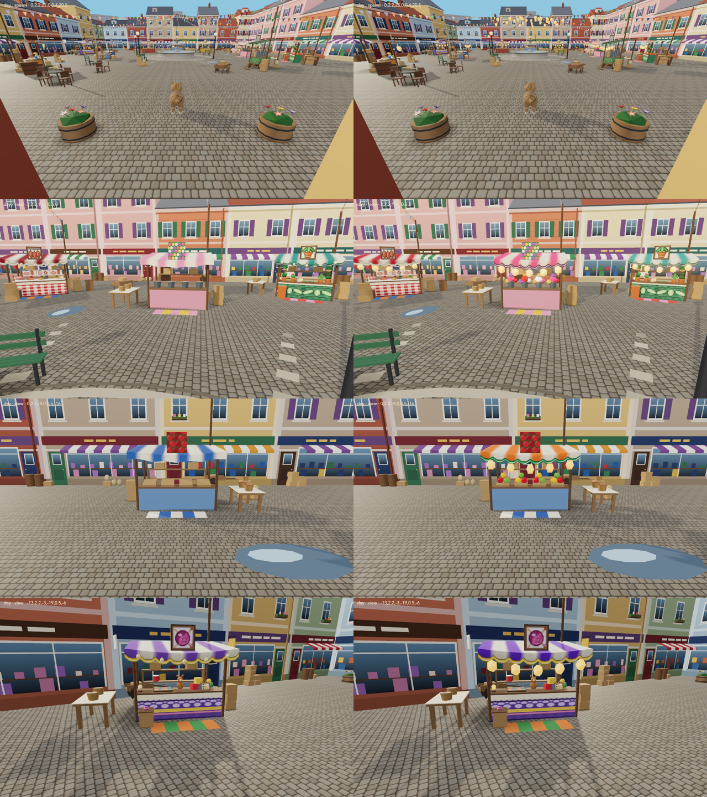

Left: before. Right: after. Rows: the spawn view; the flower stall; the fruit stall; the toy stall (the walk's camera, 4.5 m behind her, 2.2 m up). Bold awnings with scalloped, trimmed valances; produce and blooms piled high; a lantern string on every stall and paper lanterns on the bunting (warm glow by day). Not visible in a still: the awnings and bunting flutter in a breeze, and three chimneys smoke.
